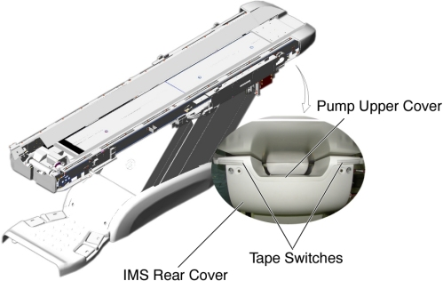
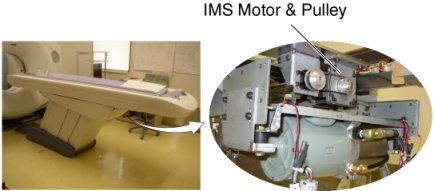
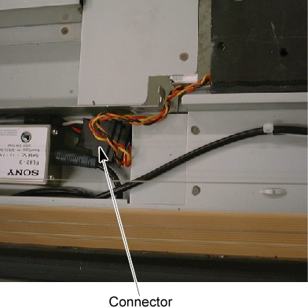
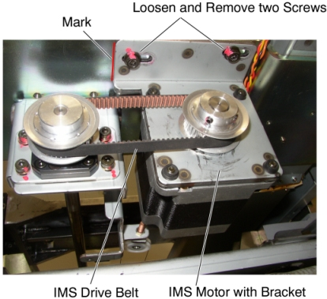
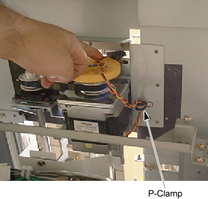
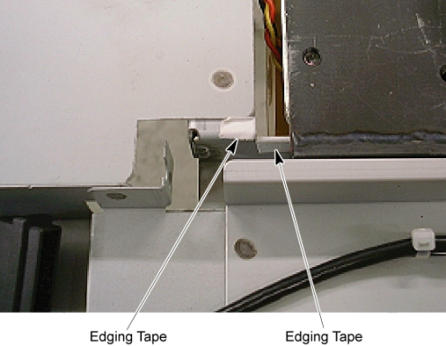
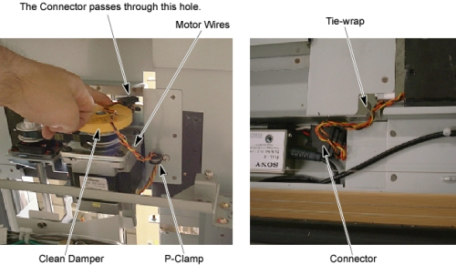
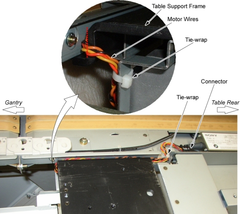
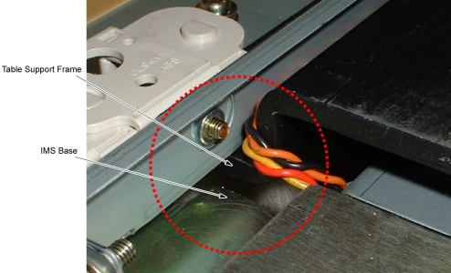

Operating Documentation
Direction 5193574-800, Rev# 22
LightSpeed 7.X Service Methods
Module Version 1.0, Version Date 10/20/08
Operating Documentation |
| Required Persons | Preliminary Reqs | Procedure | Finalization |
|---|---|---|---|
| 1 |
| Last Revised: | 26 June 2008 |
| Item | Qty | Effectivity | Part# | Manufacturer | |
|---|---|---|---|---|---|
| IMS Motor Assembly Collector (5192989) | 1 | - | - | - | |
Raise the Table to maximum height.
Move the Cradle and IMS to OUT limit position.
Remove power form Table by turning off 120VAC, Axial Drive and HVDC switches on Service Switch Panel.
Remove the following Table covers:
Top Cover (Right/Left)
Rear Top Cover
Rail Cover (Right/Left)
All Top Plates
IMS Side Cover (Right/Left)
IMS Cover Rear
Illustration 1: Table Covers

Disconnect the cable connector of the tape switch.
Illustration 2: Tape Switches

Remove the pump upper cover as follows:
To make re-installation easier, mark the position of pump upper cover on both sides by outlining the edge with a maker or pencil.
Disconnect the cable connectors of the tape switches and touch sensors.
Remove six (6) screws holding the both sides of the pump upper cover, and remove it.
Illustration 3: Pump Upper Cover Removal

Remove IMS motor cover.
Cut any tie-wraps holding the motor wires to the Table frame.
Illustration 4: IMS Motor Location

Disconnect the motor wires connector.
Illustration 5: IMS Motor Wires Connector

Mark the motor bracket position for re-installation.
If the clean damper is mounted on the IMS motor shaft, remove it.
Loosen 2 screws to remove tension from the belt, and remove the belt from the pulley on the motor.
Unscrew the 2 screws, and remove the motor with bracket.
Illustration 6: IMS Motor Removal

Install the new motor in place, and position the belt on and around the motor pulley.
Tighten the 2 screws, to fasten the motor, with tension on the belt.
If the clean damper is removed, re-install it to the IMS motor shaft.
Illustration 7: Clean Damper Installation

Perform the following appropriate step (a or b) :
(For Table with P-Clamp at the bottom of the Table support frame Or the P-Clamp is included in the replacement kit)
Illustration 8: P-Clamp

Attach the edging tape included in the replacement kit to the Table bracket.
Illustration 9: Edging Tape

Route the motor wires through the p-clamp as shown in illustration below, and re-connect the motor wires connector, then fasten the wires to the Table bracket with tie-wraps.
| NOTE: | Verify that the motor wires do not interfere with the clean damper. |
Illustration 10: IMS Motor Wires Routing

(For Table without P-Clamp at the bottom of the Table support frame And the P-Clamp is not included in the replacement kit)
Route the motor wires from the side edge of the Table support frame (red dotted line) as shown in illustration below, and re-connect the motor wires connector, then fasten the wires to the Table frame with tie-wraps.
Illustration 11: IMS Motor Cable Wiring

Move the IMS to mechanical IN limit position by hand, and verify that the motor wires are not caught between the IMS base and the Table support frame.
Illustration 12: Check IMS Motor Wires

Power up the Table from the Service Switch Panel.
Using the service switches on GTCB, move the IMS in and out.
When the Table functions properly, turn off all 3 switches (Axial Drive, HVDC, 120VAC), and reinstall the Table covers.
Power up the Table from the Service Switch Panel, and move the cradle and IMS IN and OUT completely 10 cycles, and verify that the Table movement is operating normally.